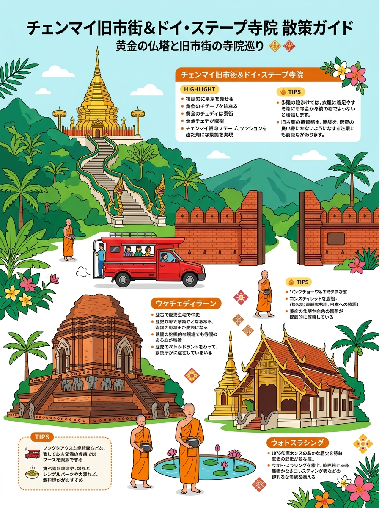
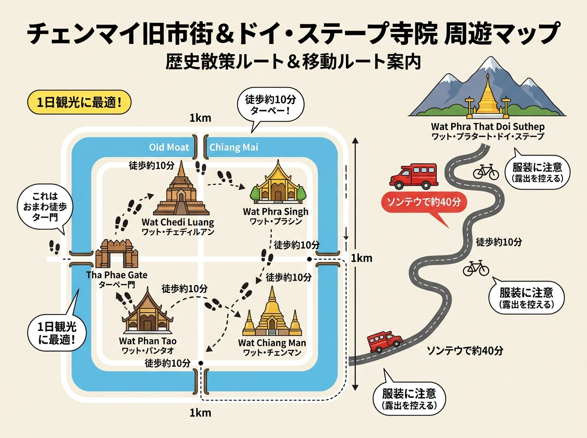

01
バンコク病院チェンライ
โรงพยาบาลกรุงเทพเชียงราย (Bangkok Hospital Chiang Rai)
タイ最大手BDMS傘下の私立総合病院。24時間ER、ICU/CCU、脳神経、循環器、一般外科、整形外科、小児科、高度画像診断（CT/MRI）完備。
バンコク病院チェンライやオーバーブルック病院等の施設情報、受診手順、緊急連絡先の一覧。
クリックすると拡大して詳細を確認・印刷できます。

旅行者の持ち歩き・印刷に適した手書き風インフォグラフィック。

位置関係やルート、全体像を俯瞰できるワイドデザイン。
現地調査および公的データに基づく最新詳細情報。
โรงพยาบาลกรุงเทพเชียงราย (Bangkok Hospital Chiang Rai)
タイ最大手BDMS傘下の私立総合病院。24時間ER、ICU/CCU、脳神経、循環器、一般外科、整形外科、小児科、高度画像診断（CT/MRI）完備。
โรงพยาบาลโอเวอร์บรุ๊ค (Overbrook Hospital)
1903年創立のキリスト教系私立総合病院。市内中心部（時計塔近く）。24時間ER、ICU、一般内科・外科、整形外科、産婦人科、小児科、人工透析。外務省医務官情報掲載。
โรงพยาบาลเกษมราษฎร์ ศรีบุรินทร์ (Kasemrad Sriburin Hospital)
タイ大手BCH傘下の私立総合病院（国道1号線沿い）。24時間ER（Mobile ICU高規格救急車配備）、ICU、心臓病センター、脳血管・神経、整形・外傷外科。外務省掲載。
โรงพยาบาลเชียงรายประชานุเคราะห์ (Chiangrai Prachanukroh Hospital)
タイ保健省直轄の第3次救急中核公立総合病院（800床超）。重症外傷センター（Level 1 Trauma相当）、高度ICU、心臓カテーテル、脳神経外科。県内最高峰の救命設備（※混雑度高）。
ศูนย์รับแจ้งเหตุฉุกเฉินและสถานกงสุล (Emergency & Consulate Services)
事故・急病・事件発生時の緊急通報および邦人保護支援窓口。1155は通訳仲介・トラブル対応、総領事館は緊急時助言・家族連絡支援。